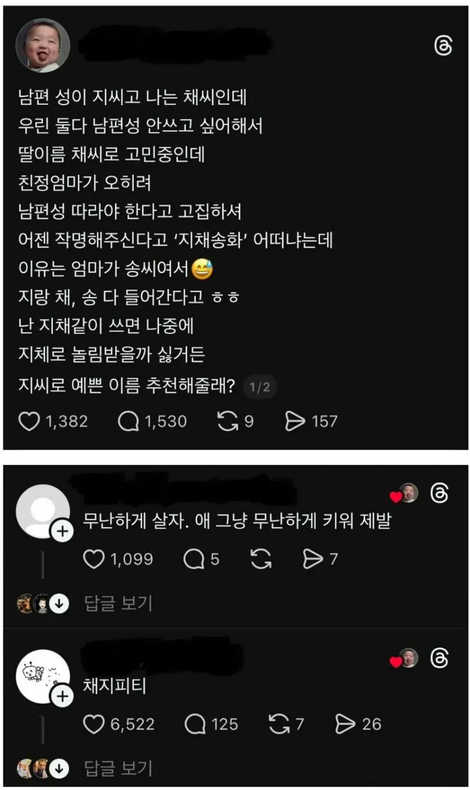

남편 성이 지씨고 난 채씨인데 아기 성을 채씨로 고민중
댓글
이게 다 서구권이나 일본처럼 결혼하면 아내성을 남편성으로 바꾸면 아내성이니 남편성이니 안따져도 될텐데
일본이나 서구권이나 아내쪽 가문 파워가 더 쌔면
남자가 아내 성으로 바꾸는 경우도 있고
성을 바꾸는게 그 가문의 일원이 됐다.
가족이 됐다라는 징표라서
결혼했는데 남자쪽 성으로 못바꾸게 하면
ㅈㄴ 서운해함
문화적으로 한국이랑 성씨가 지니는 의미가 다르더라
지채문 장군
어라 왜 아빠랑 성이다르지
이런편견을 정면으로 깨면서 강하게 자라라고?
좋은부모네 ㅋㅋㅋ
야 저새끼 엄마가 페미래 ㅋㅋㅋㅋ
초딩때 별명 '지채장애인'
백퍼
데릴사위로 들어갔다면 인정하겠는데
나도 딸낳으면 이름 선(sun)으로 지어 주고 싶었는데 다들 별로라더라 난 "최선" 이쁜데... 영어이름도 sun이고 ㅋㅋ
애 이름 가지고 장난치지마라;;; 그 애는 그 이름 가지고 80년을 살아야하는데
애 놀림 받게 하지는 마
뭐 아빠이름 알게되는 경우가 없어서 사는데는 문제없겠지만 연인같은 경우는 쎄함을 느끼겠지
친정 엄마가 제정신인데 딸은... 하여튼 페미들이 참 큰일 했다. 그냥 사소한 지 이기심으로 애 평생 해명하고 살게 만드는 공감능력과 판단능력
채게바라